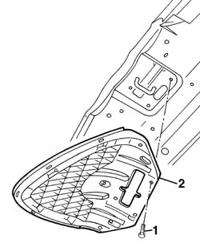
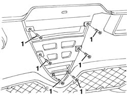
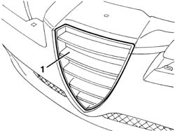

7055A40 radiator shield - r r
- Path
- Procedures > 70 FITTINGS > 7055 MOULDING AND PROTECTION > 7055A exterior mouldings > 7055A40 radiator shield - r r
- Kind
- repair procedure (removal / refitting; the operation number is the code)
- Applies to
- all engines; all production periods
- Interactive page
- https://sloeber94.github.io/elrnDB-a156/en/#/3238950
Applies to: all engines; production: fino a 03/98, da 04/98 a 02/99, da 03/99 a 01/00, da 02/00 a 01/01, da 02/01 a 02/02, da 03/02 a 09/03
 Removing
Removing
 Refitting
Refitting1. Lift the bonnet and undo the bolts fixing the shield.
2. Remove the shield.

Applies to: all engines; production: fino a 03/98, da 04/98 a 02/99, da 03/99 a 01/00, da 02/00 a 01/01, da 02/01 a 02/02, da 03/02 a 09/03
Refitting
RemovingCheck that the shield is undamaged.
Refit the shield securing it using the bolts.
Applies to: all engines; all production periods
Removing
Refitting7055B42 Additional FRONT WHEEL ARCH (one), left or right - R.R. (left and right)
7055A41 RIGHT FRONT GRILLE - R.R. (left and right)
1. Working from inside the bumper, undo the bolts fixing the shield.

Applies to: all engines; all production periods
1. Working from outside the bumper, remove the shield.

Applies to: all engines; all production periods
Refitting
RemovingCheck that the shield is undamaged.
Position the shield on the bumper and secure it using the bolts.
7055A41 RIGHT FRONT GRILLE - R.R. (left and right)
7055B42 Additional FRONT WHEEL ARCH (one), left or right - R.R. (left and right)
Topics linked from this page (3)
- 7055A41 RIGHT FRONT GRILLE - R.R.
- 7055B42 Additional FRONT WHEEL ARCH (one), left or right - R.R.
- 7210E10 R.R. FRONT BUMPER